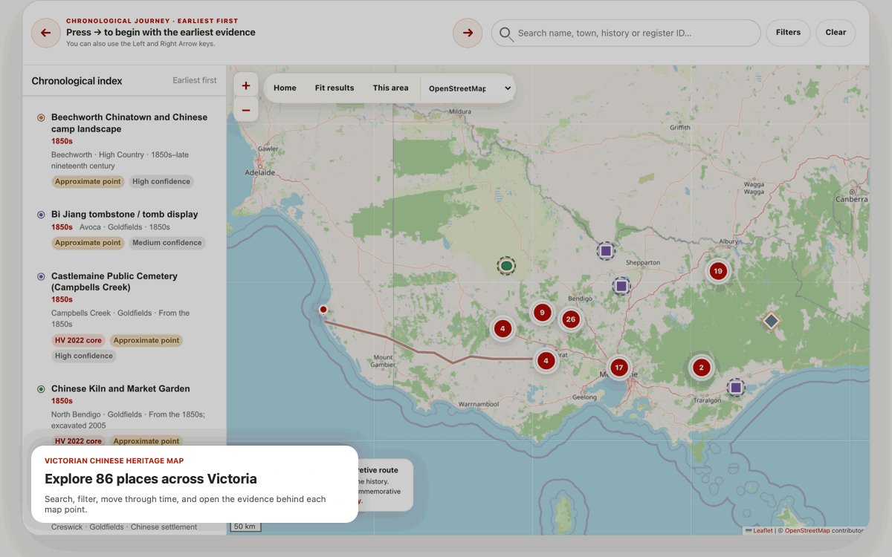

A presence before gold
Chinese merchants were already in Melbourne, while Chinese workers were employed in domestic and farm labour. Gold dramatically expanded a story already begun.
People, places and stories—connected across generations. Follow the evidence of Chinese life in Victoria from the gold rush to the living community of today.
Chinese Victorian history is a history of work, family, worship, resistance, enterprise and belonging. It unfolded on Aboriginal Country, within a gold rush that transformed and damaged land, waterways and First Peoples’ lives.
Chinese merchants were already in Melbourne, while Chinese workers were employed in domestic and farm labour. Gold dramatically expanded a story already begun.
Large numbers arrived from Guangdong. Faced with discriminatory taxes and violence, Chinese Victorians petitioned, organised and sustained a long tax-resistance campaign.
Temples, societies, cemeteries and Chinatown anchored lives shaped by gardening, trade, timber, furniture, medicine, cafés and much more.
Restrictive policy constrained settlement and family reunion, yet families, associations, missions, newspapers, shops and restaurants maintained community life.
Later migrations reshaped the community. Museums, scholarship, festivals and heritage protection brought long-marginalised histories into public view.
Search 86 documented places across Victoria, move through time, and inspect the evidence attached to every finding—from mining landscapes and temples to cemeteries, gardens and community institutions.

Chinese Victorians include descendants of nineteenth-century communities, Australian-born families and migrants from mainland China, Hong Kong, Taiwan and diasporas across Asia and beyond. No single statistic defines the community.